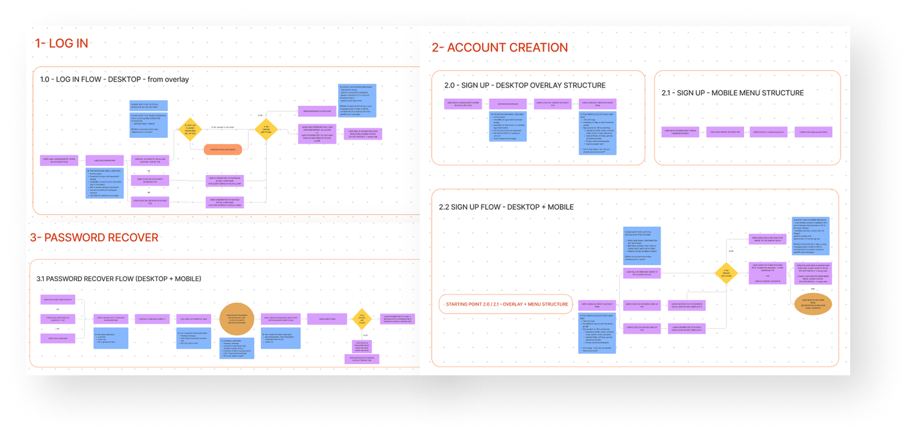
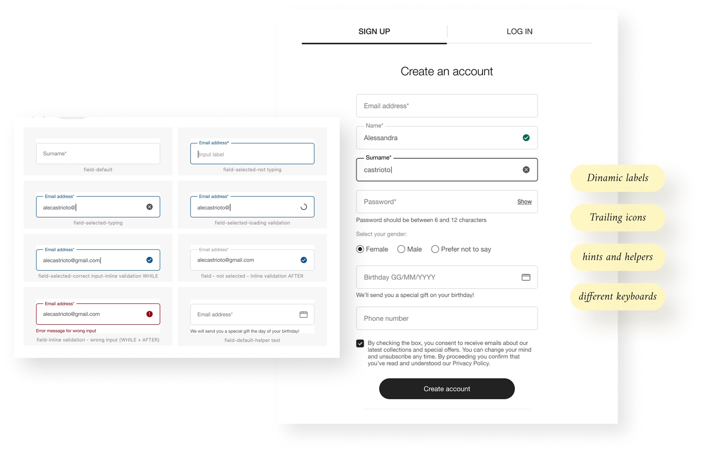

Flow optimisation
Reduced steps and preserved user context before / after authentication.
ARCHIVE 03 · Sunglass Hut · 2021
Redesigning login, registration, password recovery and account patterns to reduce friction and create reusable form behaviour.
The work focused on registration, login, password recovery and the account dashboard. High error rates and inconsistent flows made core account tasks harder than they needed to be.
Reduced steps and preserved user context before / after authentication.
Clearer error language, updated validation timing and more consistent field states.
Interaction and UI patterns intended for use beyond the account area.



The redesign became more valuable when it stopped being only an account project and started defining form patterns that could be reused across the wider site.